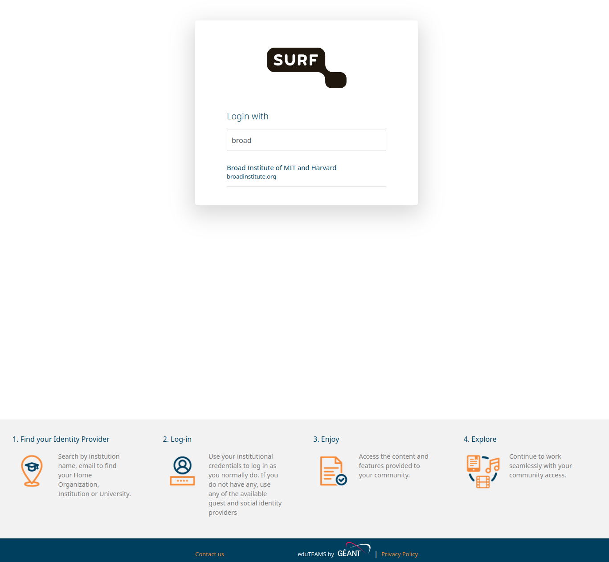
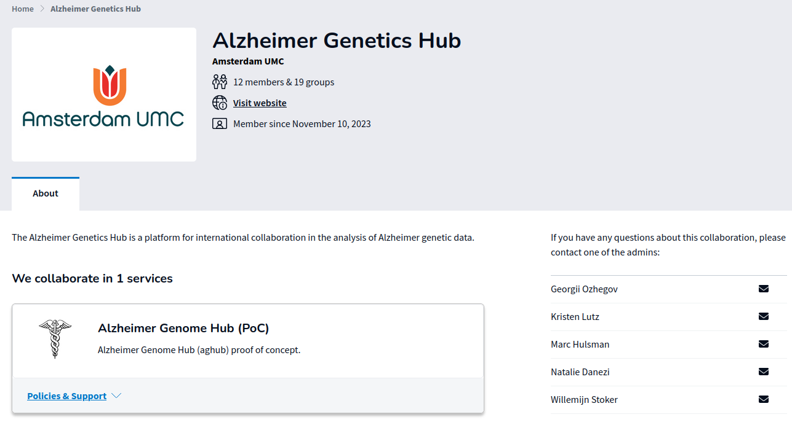

AGHub Getting Started
This guide helps you create access and log in to AGHub for the first time.
Before you begin
You should have:
- an invitation email for the AGHub SRAM collaboration
- two AGHub account emails (username + password setup link)
- a TOTP authenticator app (for example privacyIDEA)
- an SSH key pair on your computer (or time to create one)
Step 1: Join the SRAM collaboration
- Open the invitation email and accept the collaboration invite.
- Click login and choose one identity provider:
- Preferred: your institutional account
- Fallback: EduID
- Complete 2FA during SRAM login.

Note: If your institute is not enabled for SRAM, contact your local ICT/helpdesk and ask them to enable SRAM/IdP access.
After a successful join, you receive AGHub onboarding emails.

Important: The password setup link is valid for 12 hours. AGHub synchronization can take about 20 minutes.
Step 2: Set your AGHub password and 2FA
- Use the one-time password setup link from email.
- Set a strong password (minimum 12 characters, with uppercase, lowercase, number, and symbol).
- Log in and register your 2FA app by scanning the QR code.
- Accept the SURF usage agreement.
Important: Do not close the page before finishing the one-time password setup flow.
Step 3: Upload your SSH public key in SURF CUA
Open the SURF CUA portal and upload your public key.
If you do not have an SSH key yet:
- Linux/macOS: follow Spider SSH key guide
- Windows: use PuTTYgen
Show your public key on Linux/macOS:
cat ~/.ssh/id_rsa.pub
Paste that value into the portal SSH key field and confirm with your portal password.
Important: Use the portal account password here, not any passphrase of your private SSH key.
Step 4: First login to AGHub
Connect from your computer:
ssh sram-aghub-[first-initial][last-name]@doornode.hpcv.surf.nl
Then:
- Select
aghubfrom the environment list. - Enter your portal password.
- Enter the current 2FA code.
If successful, you will see the AGHub banner.
Step 5: Initialize your AGHub account
Run:
/project/aghub/Share/init/init.sh
This script sets up:
- a default Conda environment
~/rdfor Research Drive mounting- useful scripts in your home
bin - default shell/editor/screen config files
Next steps
- Configure data transfer: Use of Research Drive
- Install extra tools if needed: Installation of Software Packages
- Submit your first jobs: Spider SLURM Getting Started